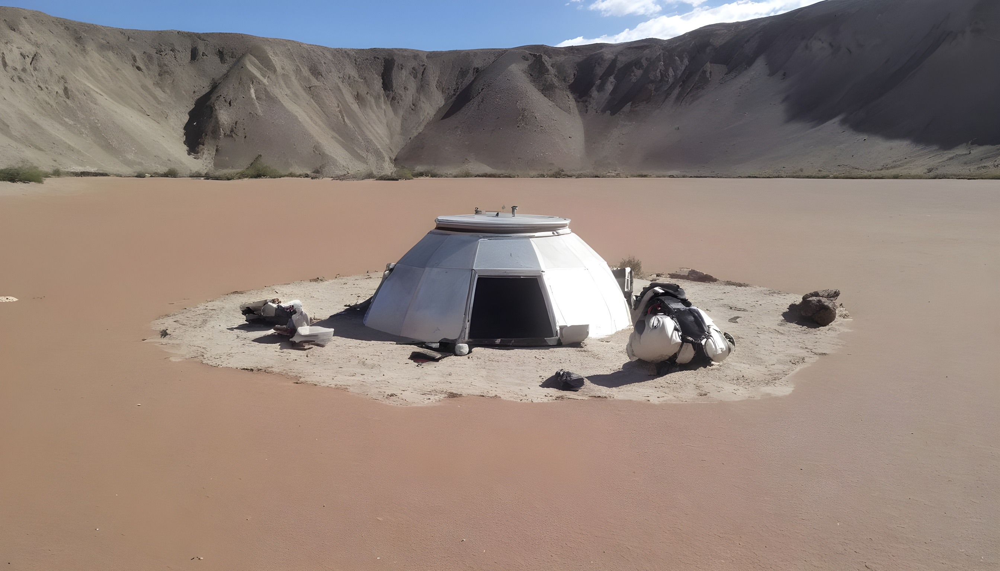

¡Bienvenido al Planeta Rocoso!
Te encuentras en un mundo árido y desolado, con paisajes rocosos y escasos recursos. La gravedad es más alta de lo normal y el ambiente es hostil para la vida humana. Sin embargo, este planeta esconde secretos y tesoros que solo los valientes exploradores pueden descubrir.
¿Qué camino tomarás en esta inhóspita tierra?
Decisión 3: Buscar refugio en un oasis cercano
Decides buscar un lugar seguro y un poco de descanso en el oasis que avistaste en el horizonte.
Al llegar al oasis, encuentras agua fresca y una vegetación exuberante, pero también descubres evidencia de presencia alienígena en los alrededores.
Decides regresar al Planeta Rocoso para reevaluar tu siguiente paso.
Después de reflexionar, te das cuenta de que aún hay mucho por descubrir en el Planeta Rocoso. Quizás valga la pena intentar explorar el agujero negro que avistaste en tu última expedición...